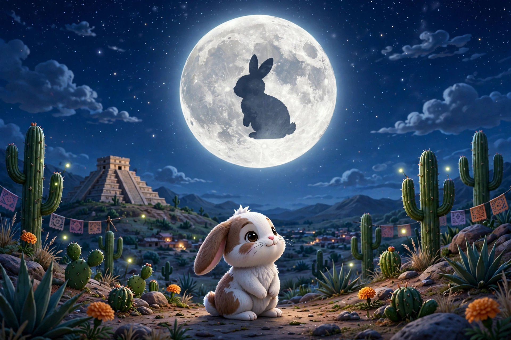

Cuenta la leyenda azteca, que el dios Quetzalcóatl dejó su aspecto de serpiente emplumada para transformarse en un hombre común y así poder explorar la Tierra. El dios se encontraba tan maravillado con los hermosos paisajes que siguió caminando hasta que el cielo se oscureció y se llenó de estrellas. Cansado y hambriento, se detuvo al lado del camino. Un conejo pasó por su lado y le preguntó: —¿Estás bien? —No, me siento muy cansado y hambriento —respondió el dios. Sin saber que estaba hablando con una deidad, el conejo rápidamente se ofreció a compartir su comida con Quetzalcóatl. —Gracias, pero no como plantas — le dijo el dios al conejo. El pequeño animal sintió mucha pena por el viajero: —No tengo nada más que ofrecerte, soy una criatura insignificante y tú necesitas recuperar tus fuerzas, por favor cómeme y reanuda tu viaje. El dios conmovido por el noble gesto de la pequeña criatura, regresó a su forma de serpiente emplumada y sostuvo al conejo tan alto que su reflejo quedó plasmado para siempre en la luna. Luego, regresó al conejo a la Tierra y dijo: —No eres una insignificante criatura, tu retrato pintado en la luz de la luna contará a todos los hombres la historia de tu bondad.

De cuentosparadormir.com
Volver al inicio